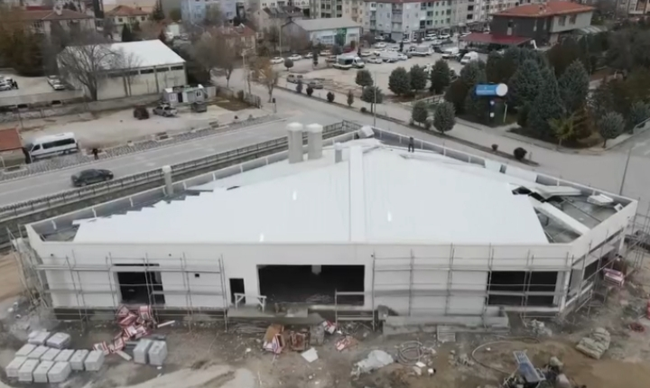

CIHANBEYLI.HABERE HOSGELDINIZ
KONYA CİHANBEYLİ'DE SOSYAL KONUTLAR NEREYE YAPILACAK?
Toplu Konut İdaresi Başkanlığı (TOKİ) tarafından yürütülen 500 bin sosyal konutluk dev proje, Konya'nın Cihanbeyli ilçesini de kapsıyor. Proje kapsamında Köprübaşı Mahallesi’ne 300 konut inşa edilecek.

Toplu Konut İdaresi Başkanlığı (TOKİ) tarafından yürütülen 500 bin sosyal konutluk dev proje, Cihanbeyli ilçesini de kapsıyor. Proje kapsamında Köprübaşı Mahallesi’ne 300 konut inşa edilecek.
>Başvurular, 10 Kasım – 19 Aralık 2025 tarihleri arasında Ziraat Bankası, Halkbank, Emlak Katılım Bankası şubeleri ve e-Devlet üzerinden yapılabilecek. Hak sahiplerinin belirlenmesi için çekilecek kuralar ise 29 Aralık 2025 – 27 Şubat 2026 tarihleri arasında gerçekleştirilecek. İlk konut teslimleri ise Mart 2027 itibarıyla başlayacak.
AK Parti Cihanbeyli İlçe Başkanı Veysel Akbulut, yaptığı açıklamada, “Vatandaşlarımızın daha modern, güvenli ve konforlu yaşam alanlarına kavuşması adına atılan bu önemli adım ilçemiz için büyük bir kazanımdır. Çevre, Şehircilik ve İklim Değişikliği Bakanımız Murat Kurum ile görüşmelerimiz sonucu ilçemize yeni bir TOKİ konut projesi kazandırdık. 500 Bin Sosyal Konut Projesi kapsamında Köprübaşı Mahallesi’ne 300 konut inşa edilecek. Emeği geçen Bakanımıza, milletvekillerimize ve AK Parti Konya İl Başkanımız Fatih Özgökçen’e teşekkür ediyorum.” ifadelerini kullandı.
13.12.2025
---------------------------------------------------------
Cihanbeyliye yeni yapilacak olan halk ekmek ve unlu mamülleri tesisi inşaatı devam ediyor
 Instagram - Google Chrome 12.12.2025 18_42_24düzenlenmis.png)
KM GRUP YATIRIM IC VE DIS TICARET AS tarafından yapilacak olan halk ekmek ve unlu mamülleri tesisi inşası devam ediyor
 Instagram - Google Chrome 12.12.2025 18_42_39düzenlenmis.png)
 Instagram - Google Chrome 12.12.2025 18_43_04düzenlenmis.png)
 Instagram - Google Chrome 12.12.2025 18_43_18düzenlenmis.png)
 Instagram - Google Chrome 12.12.2025 18_43_23düzenlenmis.png)
 Instagram - Google Chrome 12.12.2025 18_57_40düzenlenmis.png)
son hali bu şekildedir

12/12/2025